Maps in R
1 Introduction
One extremely useful feature of R for analyzing geographical data is its ability to provide maps of data in the same computing environment that the data analysis is being performed in, and moreover, to read, manipulate and analyze data with explicitly spatial coordinate information. This facility for handling spatial data is being implemented as part of the sp package which provides an internal format for spatial data, and a number of functions for its input, output and display (together constituting a set of “classes and methods”), the rgeos package, which implements many of the spatial topology functions that formerly required a full suite of GIS software. The main package(s) for working with spatial data include:
sp– provides a way to read and display ESRI shapefiles (and the feature attribute data they may contain) (Edzer Pebesma, Roger Bivand, Barry Rowlingson, Virgilio Gomez-Rubio, Robert Hijmans)rgeos– spatial topography, etc. (Roger Bivand, Colin Rundel, Edzer Pebesma, Karl Ove Hufthammer)rgdal– provides “bindings” or a way to access the Geospatial Data Abstraction Library (GDAL) and the projection/transformation operations from the PROJ.4 library (Roger Bivand, Tim Keitt, Barry Rowlingson, Edzer Pebesma, Michael Sumner, Robert Hijmans, Even Rouault)maptools– a set of tools for manipulating and reading geographic data, in particular ESRI shapefiles (Roger Bivand and many others)
Other mapping-related package include
maps– provides basemaps for the world, countries, and U.S. counties and allows the creation of simple choropleth and symbol-based maps (Original S code by Richard A. Becker and Allan R. Wilks. R version by Ray Brownrigg and enhancements by Thomas P Minka)mapdata– provides additional map databases for the maps package (Original S code by Richard A. Becker and Allan R. Wilks. R version by Ray Brownrigg)mapproj– does map-projection calculations (Doug McIlroy. Packaged for R by Ray Brownrigg and Thomas P Minka)maptree– facilitates the display of classification and regression tree analyses of spatial data (Denis White)shapefiles– reads and writes ESRI shapefiles (Ben Stabler)RColorBrewer– while not a mapping package provides good color schemes for mapping and data display in general (Cindy Brewer)rasterandrastervis– (R. Hijmans, J. van Etten and O.P. Lamigueoro) reads and visualizes (large) raster data sets.
There is an R Spatial Projects working group and discussion list that focuses on the analysis of spatial data and mapping in general.
The main place to go to get an overview of the kinds and capabilities of the spatial packages in R is the Spatial Task Views on CRAN
Work is underway to consolidate and optimize some of the diverse spatial classes and packages through the development of a “simple features” package, that ultimately will replace sp, and the stars project that basically considers all data to be both spatial and temporal, with those that aren’t thought of as special cases, as opposed to typical.
Simple features (sf) web site [https://r-spatial.github.io/sf/index.html]
Stars project (stars) web site [http://r-spatial.org/r/2017/11/23/stars1.html]
Lovelace, R., J. Nowosad, and J. Muenchow, 2017, Geocomputation with R [https://bookdown.org/robinlovelace/geocompr/]
2 Maps in R – example data and setup
The examples here use several libraries, datasets, and shapefiles that should be downloaded and/or installed, and read in before proceeding. This will make the examples easier to follow, but they will fail if the data sets do not exist or have not been read in. For one of the example data sets, Oregon climate-station data, the data are available in two forms–as a .csv file (orstation.csv), and included as part of the orstations shape file. as a consequence, the individual variables will be referred to by their “full” names (e.g. orstationc$tann).
Required libraries:
maptools (and sp), rgdal, RColorBrewer, classInt, maps, rgeos
Shapefiles:
- Oregon counties and census data:
orcounty: [.dbf] [.sbn] [.sbx] [.shp] [.shx] - Oregon county outlines only:
orotl: [.dbf] [.shp] [.shx] - Oregon climate station data:
orstations: [.dbf] [.sbn] [.sbx] [.shp] [.shx]
Data sets (rectangular data sets or data frames:
- Oregon climate station data (includes lat and lon)
orstationc: [orstationc.csv] - Oregon county census data (includes lats and lons, but not outlines)
orcountyp: [orcountyp.csv] - Large cities data set, with country names added
cities2: [cities2.csv]
The easiest way to get all of these data files and shape-file components, is to download a copy of the workspace geog495.RData and “load” it, or read it in. Otherwise, all of them are available to download from the GeogR data page.
Right-click on the above link, and save it to your working folder. (If you’ve forgotten where that is, type getwd() on the command line). Then read it in to R:
Load the libraries:
library(rgeos)
library(rgdal)
library(maptools) # also loads sp()
library(RColorBrewer) # creates nice color schemes
library(classInt) # finds class intervals for continuous variablesBefore begining, examine the “structure” of one of the shape file:
Examine the structure and contents of orcounty.shp shapefile. Each of the different approaches yields a slightly different perspective on the shapefile and its data (and all produce a lot of output, which is not echoed here).
Another version of the attributes() function provides information about the attached data (or attributes in the ArcGIS sense). Note the use of the “@” sign to indicate what part of the shape file we want to examine:
## $names
## [1] "NAME" "STATE_NAME" "STATE_FIPS" "CNTY_FIPS" "FIPS" "AREA" "POP1990"
## [8] "POP1997" "POP90_SQMI" "HOUSEHOLDS" "MALES" "FEMALES" "WHITE" "BLACK"
## [15] "AMERI_ES" "ASIAN_PI" "OTHER" "HISPANIC" "AGE_UNDER5" "AGE_5_17" "AGE_18_29"
## [22] "AGE_30_49" "AGE_50_64" "AGE_65_UP" "NEVERMARRY" "MARRIED" "SEPARATED" "WIDOWED"
## [29] "DIVORCED" "HSEHLD_1_M" "HSEHLD_1_F" "MARHH_CHD" "MARHH_NO_C" "MHH_CHILD" "FHH_CHILD"
## [36] "HSE_UNITS" "VACANT" "OWNER_OCC" "RENTER_OCC" "MEDIAN_VAL" "MEDIANRENT" "UNITS_1DET"
## [43] "UNITS_1ATT" "UNITS2" "UNITS3_9" "UNITS10_49" "UNITS50_UP" "MOBILEHOME" "NO_FARMS87"
## [50] "AVG_SIZE87" "CROP_ACR87" "AVG_SALE87"
##
## $data_types
## [1] "C" "C" "C" "C" "C" "N" "N" "N" "N" "N" "N" "N" "N" "N" "N" "N" "N" "N" "N" "N" "N" "N" "N" "N" "N"
## [26] "N" "N" "N" "N" "N" "N" "N" "N" "N" "N" "N" "N" "N" "N" "N" "N" "N" "N" "N" "N" "N" "N" "N" "N" "N"
## [51] "N" "N"
##
## $row.names
## [1] "0" "1" "2" "3" "4" "5" "6" "7" "8" "9" "10" "11" "12" "13" "14" "15" "16" "17" "18" "19"
## [21] "20" "21" "22" "23" "24" "25" "26" "27" "28" "29" "30" "31" "32" "33" "34" "35"
##
## $class
## [1] "data.frame"Note that the $data_types part of the output indicates whether individual variables are character (“C” e.g. county names) or numerical (“N” e.g. county area).
3 Some simple maps
R has the capability of plotting some simple maps using the maptools package, which can read and plot ESRI shapefiles. Here are a couple of examples:
3.1 Oregon county census data – attribute data in the orcounty.shp shape file
# equal-frequency class intervals -- block 1
plotvar <- orcounty.shp@data$POP1990
nclr <- 8
plotclr <- brewer.pal(nclr,"BuPu")
class <- classIntervals(plotvar, nclr, style="quantile")
colcode <- findColours(class, plotclr)This first block of code (above) just does some setting up, while this next block actually produces the map:
# block 2
plot(orcounty.shp, xlim=c(-124.5, -115), ylim=c(42,47))
plot(orcounty.shp, col=colcode, add=TRUE)
title(main="Population 1990",
sub="Quantile (Equal-Frequency) Class Intervals")
legend(-117, 44, legend=names(attr(colcode, "table")),
fill=attr(colcode, "palette"), cex=0.6, bty="n")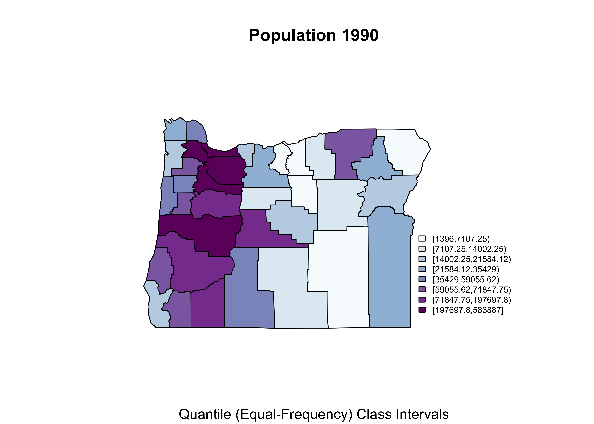
Here’s what’s going on. First, a temporary variable plotvar is created by copying the values of orcounty.sh@data$POP1990 (from “attribute” data in the shape file). Next the number of colors is set nclr <- 8 and a set of appropriate colors is generated using the brewer.pal() function. The classIntervals() function assigns the individual observations of plotvar to one of nclr equal-frequency class intervals, and then the findColours() function (note the Canadian/U.K. spelling) determines the color for each observation (each county).
In the second block, the first use of the plot() function plots the shapefile within an appropriate range of latitudes and longitudes, while the second use plots colored polygons on top. The rest of block 2 adds a title and legend. It’s a little clunky, and the placement of labels are not great, but it’s quick.
3.2 Symbol plot: Oregon climate station data – data in the orstationc.csv file, basemap in orotl.shp
Here’s a map of the Oregon climate station data with the data coming from the rstationc.csv file, and the basemap from orotl.shp
# symbol plot -- equal-interval class intervals
plotvar <- orstationc$tann
nclr <- 8
plotclr <- brewer.pal(nclr,"PuOr")
plotclr <- plotclr[nclr:1] # reorder colors
class <- classIntervals(plotvar, nclr, style="equal")
colcode <- findColours(class, plotclr)
plot(orotl.shp, xlim=c(-124.5, -115), ylim=c(42,47))
points(orstationc$lon, orstationc$lat, pch=16, col=colcode, cex=2)
points(orstationc$lon, orstationc$lat, cex=2)
title("Oregon Climate Station Data -- Annual Temperature",
sub="Equal-Interval Class Intervals")
legend(-117, 44, legend=names(attr(colcode, "table")),
fill=attr(colcode, "palette"), cex=0.6, bty="n")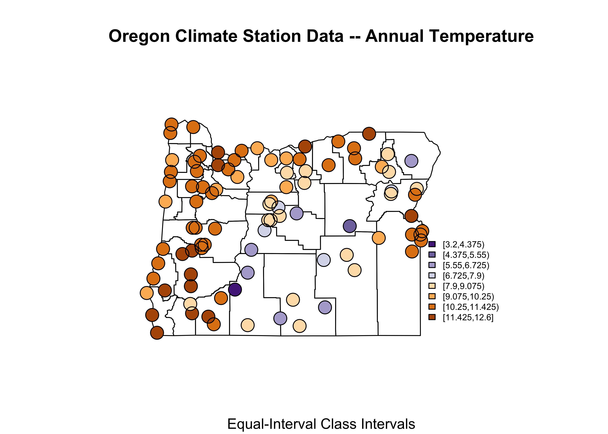
3.3 Oregon climate station data – locations and data in shape file
Here’s a third map with the Oregon climate station data locations and data coming from the shape file:
# symbol plot -- equal-interval class intervals
plotvar <- orstations.shp@data$pann
nclr <- 5
plotclr <- brewer.pal(nclr,"BuPu")
class <- classIntervals(plotvar, nclr, style="fixed",
fixedBreaks=c(0,200,500,1000,2000,5000))
colcode <- findColours(class, plotclr)
orstations.pts <- orstations.shp@coords # get point data
plot(orotl.shp, xlim=c(-124.5, -115), ylim=c(42,47))
points(orstations.pts, pch=16, col=colcode, cex=2)
points(orstations.pts, cex=2)
title("Oregon Climate Station Data -- Annual Precipitation",
sub="Fixed-Interval Class Intervals")
legend(-117, 44, legend=names(attr(colcode, "table")),
fill=attr(colcode, "palette"), cex=0.6, bty="n")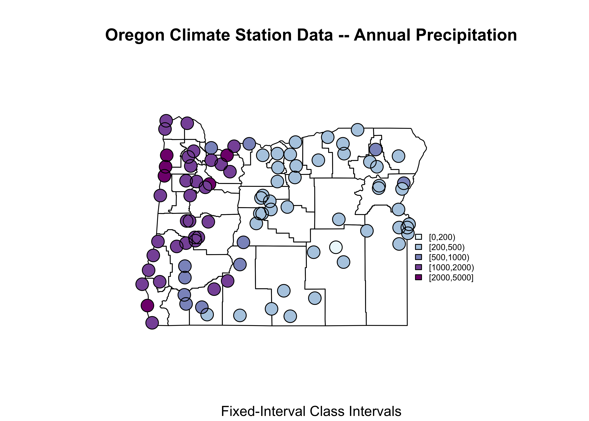
Notice how the expression orstations.shp@data$pann refers to a specific variable (pann), contained in the data attribute of the shape file. Some other things: This map uses fixed (ahead of making the map) class intervals (fixedBreaks) and the two points() function “calls”: the first plots a colored dot (col=colcode), and the second then just plots a unfilled dot (in black) to put a nice line around each point to make the symbol more obvious.
4 Variations in color scales and representation
This set of examples illustrates some more applications of the maptools package, and some variations in the construction of class intervals for choropleth maps and symbolic representation of the Oregon county-level census data:
4.1 Oregon county census data – equal-frequency class intervals
Here, the class intervals are defined such that each class has the same number of observations.
# equal-frequency class intervals
plotvar <- orcounty.shp@data$POP1990
nclr <- 8
plotclr <- brewer.pal(nclr,"BuPu")
class <- classIntervals(plotvar, nclr, style="quantile")
colcode <- findColours(class, plotclr)
plot(orcounty.shp, xlim=c(-124.5, -115), ylim=c(42,47))
plot(orcounty.shp, col=colcode, add=TRUE)
title(main="Population 1990",
sub="Quantile (Equal-Frequency) Class Intervals")
legend(-117, 44, legend=names(attr(colcode, "table")),
fill=attr(colcode, "palette"), cex=0.6, bty="n")
4.2 Oregon county census data – equal-width class intervals
Now, the classes are defined so than each class has the same “width”.
#equal-width class intervals of 1990 population
plotvar <- orcounty.shp@data$POP1990
nclr <- 8
plotclr <- brewer.pal(nclr,"BuPu")
#plotclr <- plotclr[nclr:1] # reorder colors if appropriate
class <- classIntervals(plotvar, nclr, style="equal")
colcode <- findColours(class, plotclr)
plot(orcounty.shp, xlim=c(-124.5, -115), ylim=c(42,47))
plot(orcounty.shp, col=colcode, add=TRUE)
title(main="Population 1990",
sub=" Equal-Width Class Intervals")
legend(-117, 44, legend=names(attr(colcode, "table")),
fill=attr(colcode, "palette"), cex=0.6, bty="n")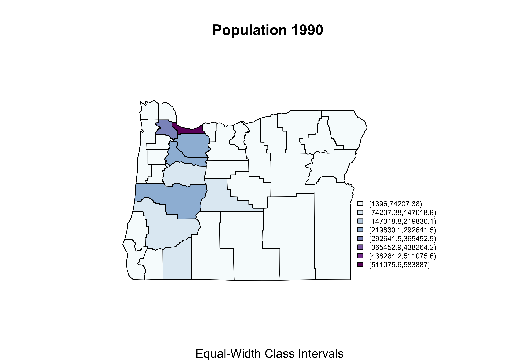
The same data are being plotted here, the difference is the way in which class intervals are defined. Equal-frequency class intervals create a general gradient of county sizes from the small ones in the northern Willamette Valley to the larger eastern Oregon ones, while the equal-width class intervals emphasize the large differences in the size of the counties.
4.3 The bubble plot (on a map)
We tend to be influenced more by the simple area of an object on the page or screen than by whatever is being plotted. For example, here’s the 1990 county population, plotted as polygons.
Notice above that Multnomah county, the most populated one, despite being plotted in a dark color, gets kind of dominated by the larger, less populated counties that surround it. The eastern Oregon counties, the least populated, occupy the greatest area on the map. The solution is the bubble plot:
# bubble plot equal-frequency class intervals
plotvar <- orcounty.shp@data$POP1990
nclr <- 8
plotclr <- brewer.pal(nclr,"BuPu")
#plotclr <- plotclr[nclr:1] # reorder colors if appropriate
max.symbol.size=12
min.symbol.size=1
class <- classIntervals(plotvar, nclr, style="quantile")
colcode <- findColours(class, plotclr)
symbol.size <- ((plotvar-min(plotvar))/
(max(plotvar)-min(plotvar))*(max.symbol.size-min.symbol.size)
+min.symbol.size)
plot(orcounty.shp, xlim=c(-124.5, -115), ylim=c(42,47))
orcounty.cntr <- coordinates(orcounty.shp)
points(orcounty.cntr, pch=16, col=colcode, cex=symbol.size)
points(orcounty.cntr, cex=symbol.size)
text(-120, 46.5, "POP1990: Equal-Frequency Class Intervals")
legend(-117, 44, legend=names(attr(colcode, "table")),
fill=attr(colcode, "palette"), cex=0.6, bty="n")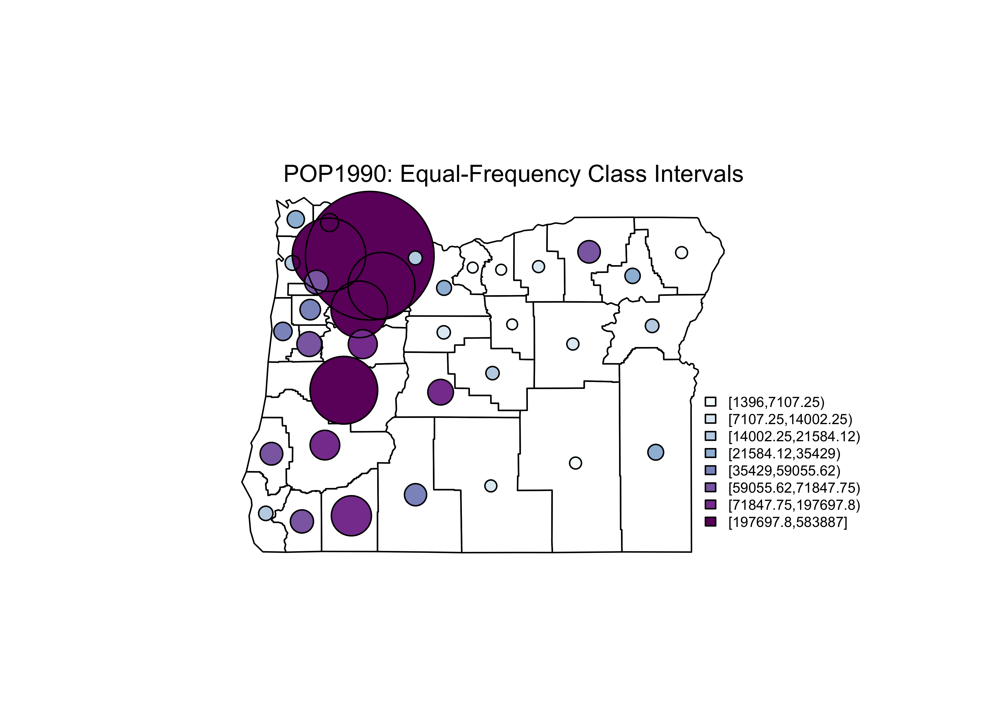
Here the size of each symbol is calculated using the county population using the code at the end of the first block, and then the symbol is plotted at the centroid of each county, which is located using the coordinates() function. Note that the symbol sizes could be made vary continuously.
4.4 Dot maps
Another way to plot data that applies to polygons (counties, states, countries, etc.), is the time-honored dot map:
# maptools dot-density maps
# warning: this can take a little while
plottitle <- "Population 1990, each dot=1000"
orpolys <- SpatialPolygonsDataFrame(orcounty.shp, data=as(orcounty.shp, "data.frame"))
plotvar <- orpolys@data$POP1990/1000.0
dots.rand <- dotsInPolys(orpolys, as.integer(plotvar), f="random")
plot(orpolys, xlim=c(-124.5, -115), ylim=c(42,47))
plot(dots.rand, add=TRUE, pch=19, cex=0.5, col="magenta")
plot(orpolys, add=TRUE)
title(plottitle)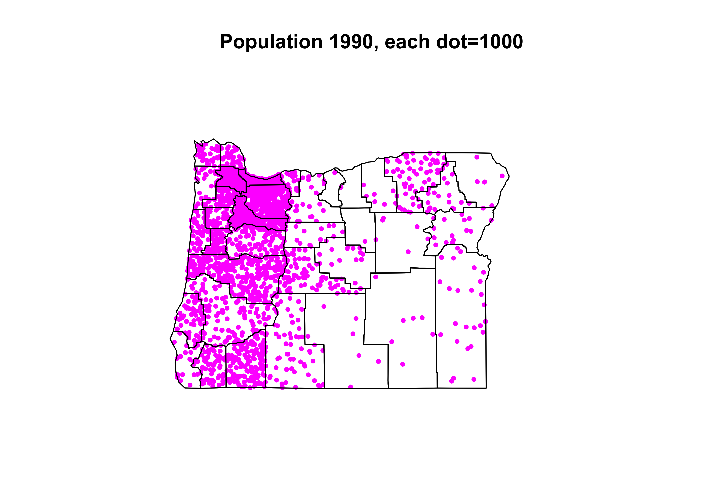
dots.reg <- dotsInPolys(orpolys, as.integer(plotvar), f="regular")
plot(orpolys, xlim=c(-124.5, -115), ylim=c(42,47))
plot(dots.reg, add=TRUE, pch=19, cex=0.5, col="purple")
plot(orpolys, add=TRUE)
title(plottitle)The first map randomly locates each dot, which looks nicer, but may be misleading in regions where the dots are sparse (i.e. they may look like they are identifying specific places), while the second map clearly shows a stylized depiction of population, but looks kind of strange.
5 Projection and spatial transformation
The sp class and maptools package provide a mechanism for doing projected maps. (Note that the projection parameters used in the example here are not really appropriate for the area being plotted, but were chosen to make the fact that the data are projected evident.)
Load some libraries:
## rgdal: version: 1.2-16, (SVN revision 701)
## Geospatial Data Abstraction Library extensions to R successfully loaded
## Loaded GDAL runtime: GDAL 2.1.3, released 2017/20/01
## Path to GDAL shared files: /Users/bartlein/Library/R/3.4/library/rgdal/gdal
## GDAL binary built with GEOS: FALSE
## Loaded PROJ.4 runtime: Rel. 4.9.3, 15 August 2016, [PJ_VERSION: 493]
## Path to PROJ.4 shared files: /Users/bartlein/Library/R/3.4/library/rgdal/proj
## Linking to sp version: 1.2-55.1 A simple example
The first block of code below is the standard setup for determining plotting colors.
# equal-frequency class intervals -- spplot & projected
plotvar <- orstations.shp@data$tann # gets data from shapefile .dbf
nclr <- 8
plotclr <- brewer.pal(nclr,"PuOr")
plotclr <- plotclr[nclr:1] # reorder colors
class <- classIntervals(plotvar, nclr, style="quantile")
colcode <- findColours(class, plotclr)Next, the latitude/longitude coordinates of the points in the shape file are projected into the Albers Equal-Area aea coordinate system. The next block adds “projection string” (i.e. the name of the projection that the data are currently in to the shape file (in case it’s not already there), and does the projection. First a long string of information in specified in the first statement, then the spTransform() function does the actual conversion of latitudes and longitudes into x, y coordinates.
# do the projection
# Albers equal-area projection parameters
aea.proj <- "+proj=aea +lat_1=29.5 +lat_2=45.5 +lat_0=37.5 +lon_0=-110
+x_0=0 +y_0=0 +ellps=GRS80 +datum=NAD83 +units=m"
# project the county outlines and station locations
orotl.shp.proj <- spTransform(orotl.shp, CRS(aea.proj))
orstations.shp.proj <- spTransform(orstations.shp, CRS(aea.proj))For decoration on the map, a graticule is generated and projected. The gridlines() function creates a graticule in latitude and longitude, and the spTransform() function projects those, like the polygons above.
# generate and project a graticule
orgrat <- gridlines(orotl.shp, easts=seq(-127,-115,by=1),
norths=seq(42,47,by=1), ndiscr = 20)
orgrat.proj <- spTransform(orgrat, CRS(aea.proj))Finally, the spplot() function makes the map.
# specify a state and county outline file and graticule
basemap1 <- list("sp.lines", orgrat.proj, col="gray", fill=NA)
basemap2 <- list("sp.lines", orotl.shp.proj, fill=NA)
# plot the map
spplot(orstations.shp.proj, "tann",
col.regions=plotclr, cuts=nclr, at=round(class$brks, digits=1),
xlim=bbox(orotl.shp.proj)[1,], ylim=bbox(orotl.shp.proj)[2,],
key.space="right",
sp.layout=list(basemap1, basemap2),
main="Annual Temperature")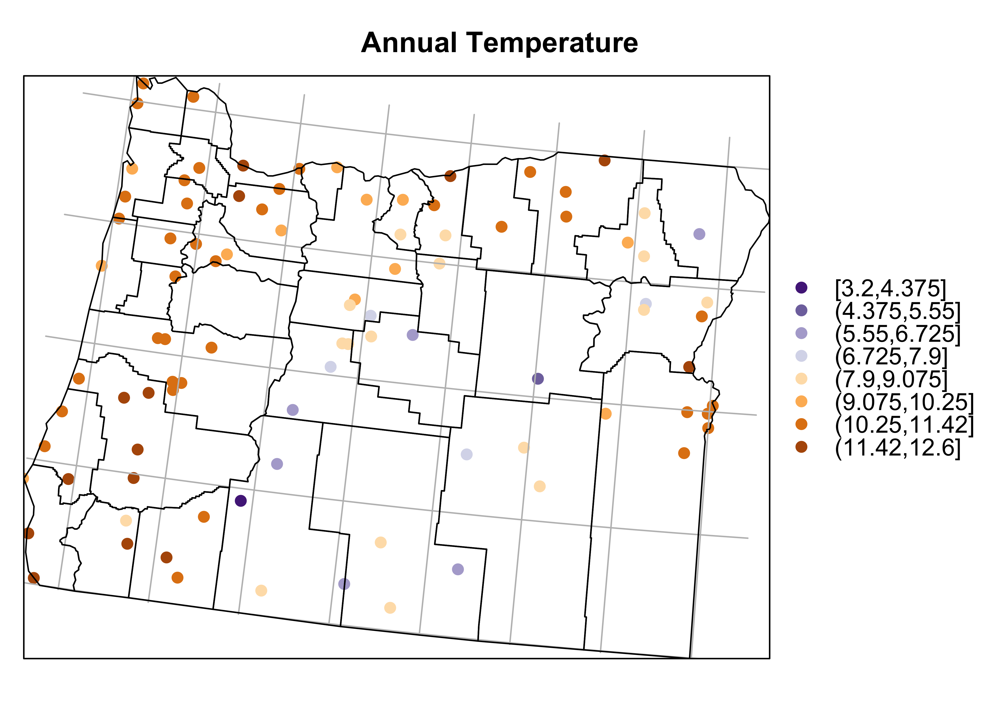
Note that the map is a little different from that made using the standard plot() function. spplot() function uses the lattice package for plotting, and (in these examples) automatically adds a legend. The map is a little awkward looking, which is intended to illustrate the fact that it is indeed projected. A better choice for the +lon_0= argument in the projection string above would be +lon_0=-120
5.2 A second example
Here’s a second example, Oregon county census data, where the data being plotted comes from the orcounty.shp shape file, and again is plotted using different choices for class-interval definitions. First, equal-frequency class intervals:
# project Oregon county data
aea.proj <- "+proj=aea +lat_1=29.5 +lat_2=45.5 +lat_0=37.5 +lon_0=-110
+x_0=0 +y_0=0 +ellps=GRS80 +datum=NAD83 +units=m"
orcounty.shp.proj <- spTransform(orcounty.shp, CRS(aea.proj))
# equal-frequency class intervals -- spplot & projected
plotvar <- orcounty.shp@data$AREA
nclr <- 8
plotclr <- brewer.pal(nclr,"BuPu")
class <- classIntervals(plotvar, nclr, style="equal")
colcode <- findColours(class, plotclr)
spplot(orcounty.shp.proj, "AREA",
col.regions=plotclr, at=round(class$brks, digits=1))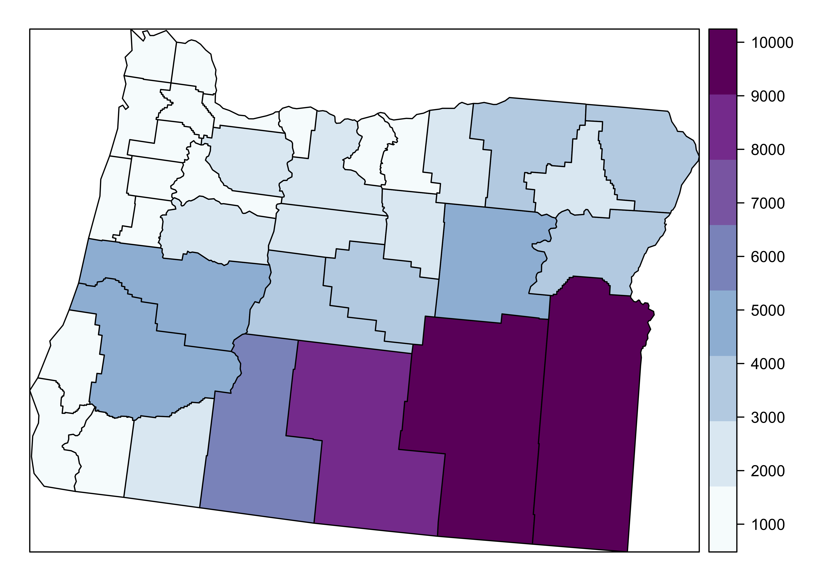
And now, equal-width class intervals:
# equal-width class intervals -- spplot & projected
plotvar <- orcounty.shp@data$AREA
nclr <- 8
plotclr <- brewer.pal(nclr,"BuPu")
class <- classIntervals(plotvar, nclr, style="quantile")
colcode <- findColours(class, plotclr)
spplot(orcounty.shp.proj, "AREA",
col.regions=plotclr, at=round(class$brks, digits=1))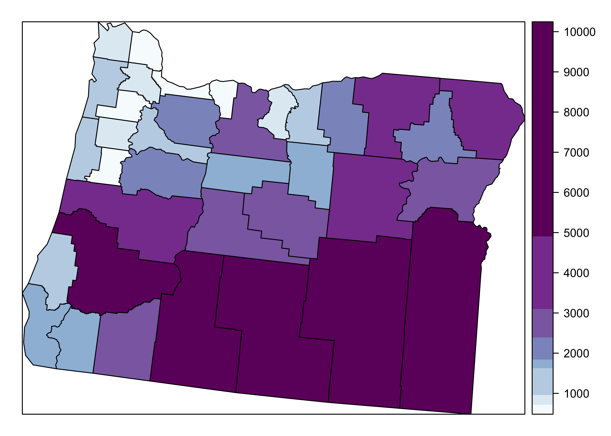
Note that the code for producing maps using the spplot() function is much like that using plot(): some setup work first, then determination of the actual colors or symbols that will be plotted, then finally creation of the map.
6 The maps package
The R maps package provides a means of mapping data that are not necessarily components of a shapefile. The package provides a way of plotting choropleth maps using polygons that it contains (U.S. states and counties, countries of the world), and can use it’s internal polygons to provide unfilled basemaps for point data. The following example replicate the bubble plots done using the maptools package.
6.1 Oregon county census data – bubble plots of orcounty.csv data
After loading the map and mapproj libraries, take a quick look at the orcounty.csv data
## [1] "Name" "Area" "Pop1990" "Pop1997" "Pop90.sqmi" "Households" "Males"
## [8] "Females" "White" "Black" "Ameri.es" "Asian.pi" "Other" "Hispanic"
## [15] "Age.under5" "Age.5.17" "Age.18.29" "Age.30.49" "Age.50.64" "Age.65.up" "Nevermarry"
## [22] "Married" "Separated" "Widowed" "Divorced" "Hsehld.1.m" "Hsehld.1.f" "Marhh.chd"
## [29] "Marhh.no.c" "Mhh.child" "Fhh.child" "Hse.units" "Vacant" "Owner.occ" "Renter.occ"
## [36] "Median.val" "Medianrent" "Units.1det" "Units.1att" "Units2" "Units3.9" "Units10.49"
## [43] "Units50.up" "Mobilehome" "No.farms87" "Avg.size87" "Crop.acr87" "Avg.sale87" "Longitude"
## [50] "Latitude" "X" "Y"One issue that arises in plotting data (e.g. from a .csv file) and location (i.e. points, polygons or grids) is whether or not the observations are in the same order in both data sources. If the ultimate data source is a shapefile, generally the proper ordering has been taken care of, but if, as in this example, the data and location information come from different sources, that may not be the case. Here’s how to check that both data sources have their observations in the same order. (If they don’t that can be fixed, which is illustrated in the next example.) The map() function is the main plotting function, but is used here to list the order of the counties in its database.
## [1] "oregon,baker" "oregon,benton" "oregon,clackamas" "oregon,clatsop" "oregon,columbia"
## [6] "oregon,coos" "oregon,crook" "oregon,curry" "oregon,deschutes" "oregon,douglas"
## [11] "oregon,gilliam" "oregon,grant" "oregon,harney" "oregon,hood river" "oregon,jackson"
## [16] "oregon,jefferson" "oregon,josephine" "oregon,klamath" "oregon,lake" "oregon,lane"
## [21] "oregon,linn" "oregon,lincoln" "oregon,malheur" "oregon,marion" "oregon,morrow"
## [26] "oregon,multnomah" "oregon,polk" "oregon,sherman" "oregon,tillamook" "oregon,umatilla"
## [31] "oregon,union" "oregon,wallowa" "oregon,wasco" "oregon,washington" "oregon,wheeler"
## [36] "oregon,yamhill"## [1] Baker Benton Clackamas Clatsop Columbia Coos Crook Curry Deschutes
## [10] Douglas Gilliam Grant Harney Hood River Jackson Jefferson Josephine Klamath
## [19] Lake Lane Lincoln Linn Malheur Marion Morrow Multnomah Polk
## [28] Sherman Tillamook Umatilla Union Wallowa Wasco Washington Wheeler Yamhill
## 36 Levels: Baker Benton Clackamas Clatsop Columbia Coos Crook Curry Deschutes Douglas Gilliam ... YamhillIn this case, the observations are in the same order in both data sources.
Here’s the map (note that it is unprojected):
# bubble plot equal-frequency class intervals
# the usual set-up block of code
plotvar <- orcountyp$Area
nclr <- 8
plotclr <- brewer.pal(nclr,"BuPu")
#plotclr <- plotclr[nclr:1] # reorder colors if appropriate
max.symbol.size=10
min.symbol.size=1
class <- classIntervals(plotvar, nclr, style="quantile")
colcode <- findColours(class, plotclr)
symbol.size <- ((plotvar-min(plotvar))/
(max(plotvar)-min(plotvar))*(max.symbol.size-min.symbol.size)
+min.symbol.size)
# now the map
# plot the basemap first
map("county", "oregon", xlim=c(-125,-114), ylim=c(42,47))
map.axes()
# add points, text and legend
points(orcountyp$Longitude, orcountyp$Latitude, pch=16, col=colcode,
cex=symbol.size)
points(orcountyp$Longitude, orcountyp$Latitude, cex=symbol.size)
text(-120, 46.5, "Equal-Frequency Class Intervals")
legend(-117, 44, legend=names(attr(colcode, "table")),
fill=attr(colcode, "palette"), cex=0.6, bty="n")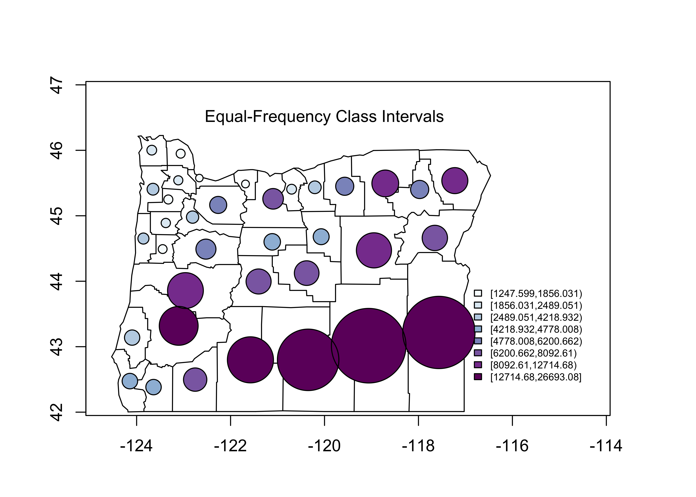
##Plotting data on basemaps from the maps package ##
The maps package provides a means of constructing basemaps for plotting the locations of points, which can be decorated with text, symbols, and so on – most of the things that be done on scatter plots.
The following example plots the location of large cities. A built-in data set world.cities from the maps is made available using the data() function, and some information describing each of the cities in the cities dataframe is gotten using the match() function, with looks at the name of a city in the cities2 dataframe, and then looks in world.cities for the corresponding information (latitude and longitude in this case). The match() function provides one approach for aligning observations in a data set with locational information in a different data source
# map of large cities -- data setup
data(world.cities) # make the world cities location data set from the maps package available
# match the large cities with those in the database
m <- match(paste(tolower(as.character(cities2$City)),tolower(as.character(cities2$Country))),
paste(tolower(world.cities$name),tolower(world.cities$country.etc)))
# assign the world.cities location information to the large cities
big.cities <- NULL
big.cities$name <- cities2$City
big.cities$long <- world.cities$long[m]
big.cities$lat <- world.cities$lat[m]
big.cities## $name
## [1] Buenos Aires Dhaka Rio de Janeiro Sao Paulo Beijing Shanghai
## [7] Tianjin Cairo Bombay Calcutta Delhi Jakarta
## [13] Osaka Tokyo Soul Mexico City Lagos Karachi
## [19] Manila Los Angeles New York
## 21 Levels: Beijing Bombay Buenos Aires Cairo Calcutta Delhi Dhaka Jakarta Karachi Lagos ... Tokyo
##
## $long
## [1] -58.37 90.39 -43.20 -46.63 116.40 121.47 117.20 31.25 72.82 88.36 77.21 106.83
## [13] 135.50 139.77 126.99 -99.14 26.47 67.01 120.97 -118.41 -73.94
##
## $lat
## [1] -34.61 23.70 -22.91 -23.53 39.93 31.23 39.13 30.06 18.96 22.57 28.67 -6.18 34.68 35.67
## [15] 37.56 19.43 41.45 24.86 14.62 34.11 40.67# plot the map, and add city name labels
map("world")
map.axes()
points(big.cities$long,big.cities$lat, col="blue")
text(big.cities$long, big.cities$lat, big.cities$name, col="red", cex=1.0)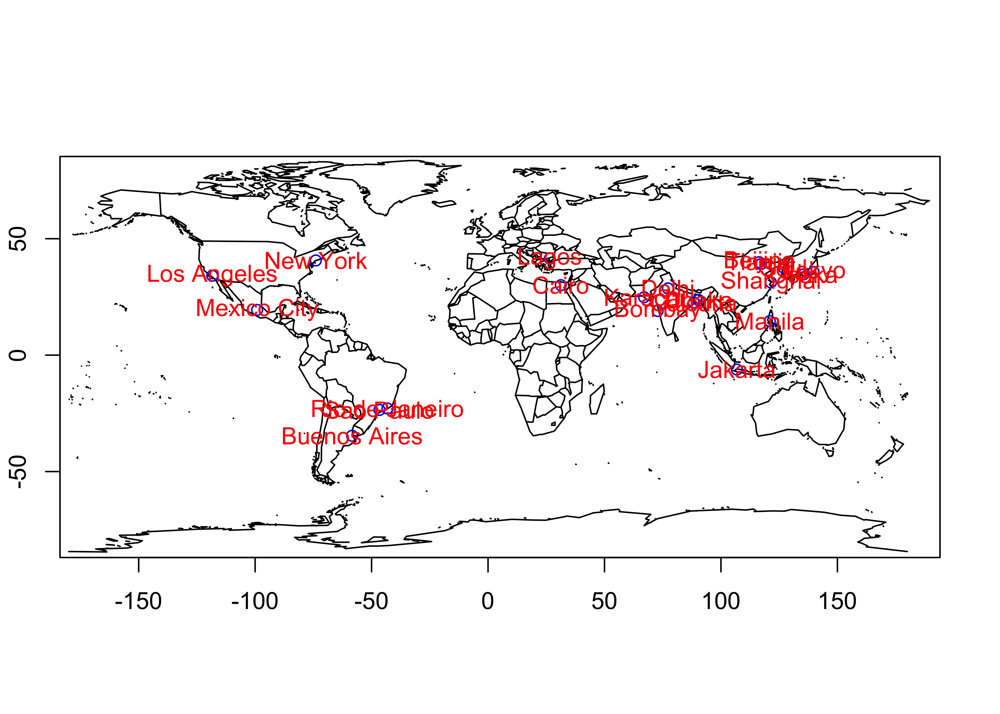
The next example generates a projected map of large cities. The projection is done using the mapproject() function.
# map of large cities
m <- match(paste(tolower(as.character(cities2$City)),tolower(as.character (cities2$Country))),
paste(tolower(world.cities$name),tolower(world.cities$country.etc)))
big.cities <- NULL
big.cities$name <- cities$City
big.cities$long <- world.cities$long[m]
big.cities$lat <- world.cities$lat[m]
# map projection information
proj.type <- "azequalarea"
proj.orient <- c(90,0,30)
# plot the map
map("world", proj=proj.type, orient=proj.orient, resolution=0, wrap=TRUE)
map.grid(col="black", labels=FALSE, lty=1)
proj.coords <- mapproject(big.cities$long,big.cities$lat, proj=proj.type, orient=proj.orient)
points(proj.coords, col="blue")
text(proj.coords, labels=big.cities$name, col="red", cex=0.8)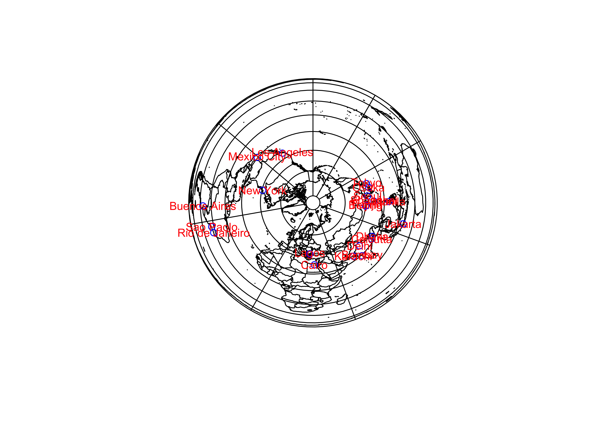
7 Further examples illustrating map projection using the maps package
The maps package can provide outlines of, for example, the globe, countries, or U.S. counties. These outlines can be projected providing less distorted views of a data set than simply plotting data as a function of latitude and longitude. Here are some examples that plot the locations of the Oregon climate-station data.
7.1 Unprojected maps
First, a map of Oregon alone:
# unprojected, Oregon
map("county", "oregon", fill=FALSE)
points(orstationc$lon, orstationc$lat)
text(orstationc$lon, orstationc$lat, labels=orstationc$station, col="red",
cex=.8)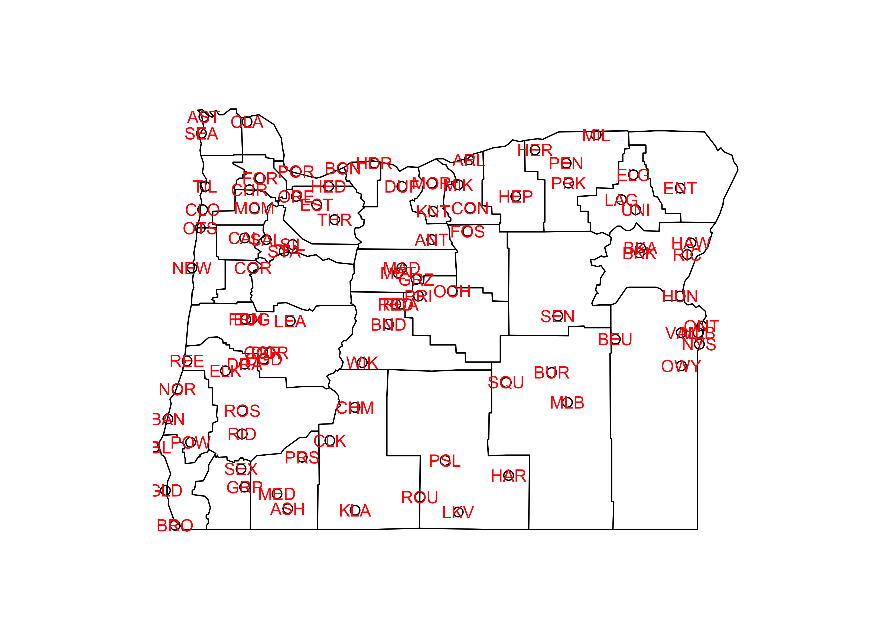
Next, a map with outlines from adjacent states (note the second use of the map() function to produce a state-border outline):
# unprojected, add adjacent states
map("county", c("oregon","washington", "california", "nevada", "idaho"),
xlim=c(-125,-116), ylim=c(41,47), fill=FALSE)
map("state", "oregon", fill=FALSE, col="grey", lwd=3, add=TRUE)
points(orstationc$lon, orstationc$lat)
text(orstationc$lon, orstationc$lat, labels=orstationc$station, col="red",
cex=.75)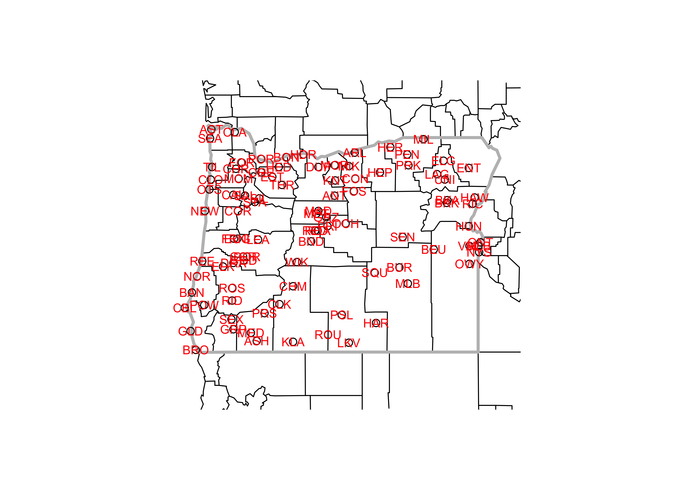
7.2 Projected maps
The same approach can be used to produce a projected map as follows:
# projected map of Oregon and adjacent states
proj.type <- "albers"
proj.stdlats <- c(29.5, 45.5)
proj.orient <- c(90,-120,0)
map("county", c("oregon"),
proj=proj.type, par=proj.stdlats, orient=proj.orient, xlim=c(-125,-116), ylim=c(41,47), fill=FALSE)
orstationc.xy <- mapproject(orstationc$lon, orstationc$lat, proj=proj.type,
orient=proj.orient, par=proj.stdlats)
map("state", "oregon", proj=proj.type, par=proj.stdlats,
orient=proj.orient, fill=FALSE, col="grey", lwd=3, add=TRUE)
points(orstationc.xy)
text(orstationc.xy, labels=orstationc$station, col="red", cex=.8)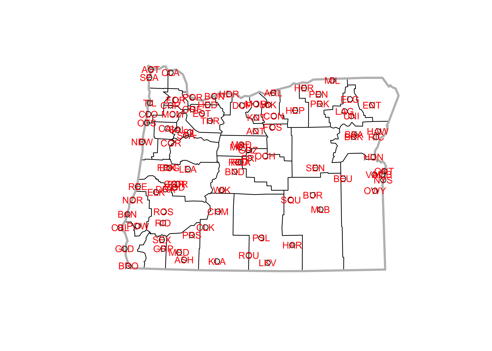
Note that the fact that this map is projected may be a little hard to see, because the projection origins were set to appropriate values for making a nice map of Oregon. Here’s a version with the whole US in the frame.
# projected, whole US
proj.type <- "albers"
proj.stdlats <- c(29.5, 45.5)
proj.orient <- c(90,-100,0)
map("world", c("canada", "mexico"), proj=proj.type, par=proj.stdlats, orient=proj.orient, xlim=c(-130, -50), ylim=c(25,55), resolution=0, wrap=TRUE)
map("state", proj=proj.type, par=proj.stdlats, orient=proj.orient, resolution=0, wrap=TRUE, add=TRUE)
map.grid(col="gray", labels=FALSE, lty=2)
map("state", "oregon", proj=proj.type, par=proj.stdlats,
orient=proj.orient, fill=FALSE, col="grey", lwd=3, add=TRUE)
orstationc.xy <- mapproject(orstationc$lon, orstationc$lat, proj=proj.type,
par=proj.stdlats, orient=proj.orient)
points(orstationc.xy, col="blue", pch=16, cex=0.75)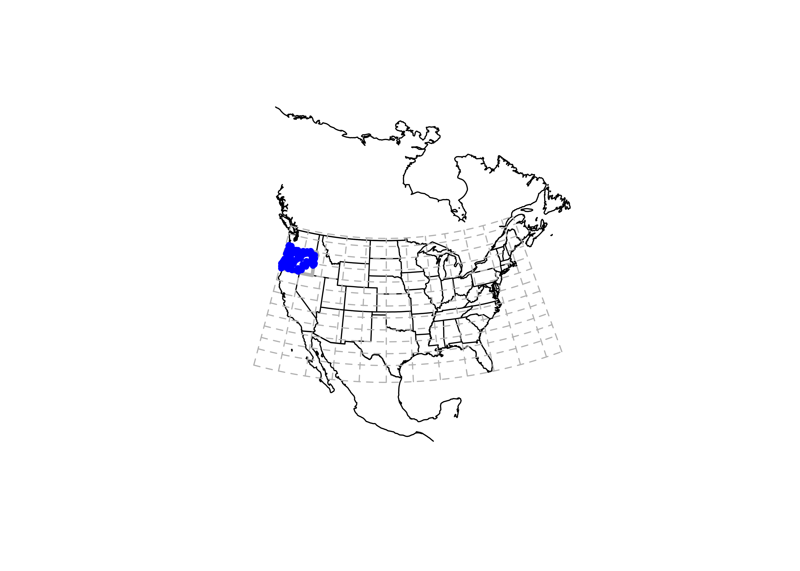
7.3 Basemap shapefile generation using the maps package
The map2SpatialLines() function in the maptools function can be used to transform lines extracted from the maps package into sp package-compatible format to provide basemaps for plotting other data sets. Here is an example for the Pacific Northwest.
# extract county outlines from maps() database
pnw.outlines <- map("county", c("oregon","washington", "california",
"nevada", "idaho"),
xlim=c(-124.5, -116.0), ylim=c(41.0, 47.0))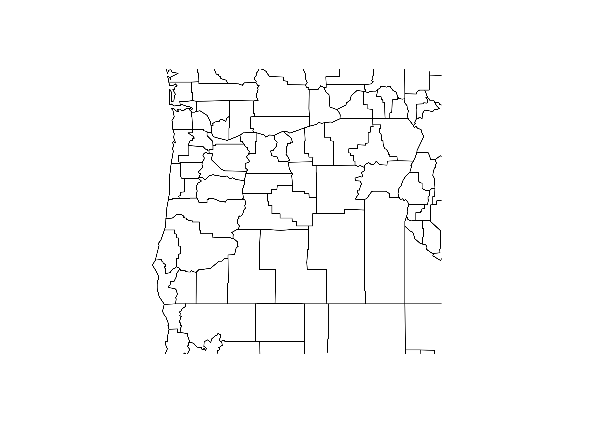
# prune the lines to Washington, Oregon, and Northern California extent
pnw.outlines <- pruneMap(pnw.outlines, xlim=c(-125.0, -115.0), ylim=c(41.0,
47.0))
# convert to sp lines
pnw.outlines.sp <- map2SpatialLines(pnw.outlines, proj4string=
CRS("+proj=longlat"))## Warning in map2SpatialLines(pnw.outlines, proj4string = CRS("+proj=longlat")): map2SpatialLines: 7 zero-
## length Lines object(s) omittedplot(pnw.outlines.sp, col="gray", lwd=2)
degAxis(1, at=seq(-125.,-116., by=1.))
degAxis(2, at=seq(42.,47., by=1.))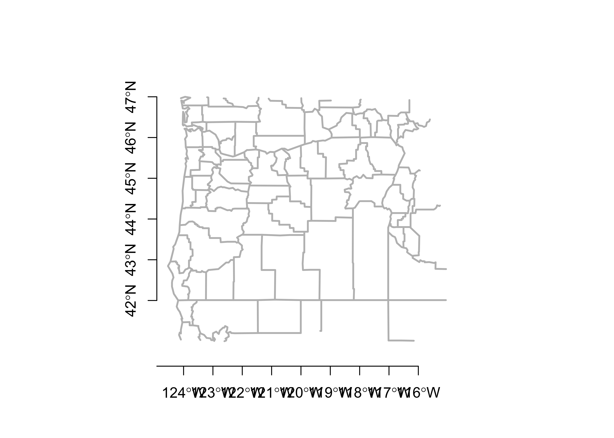
# project the outlines
aea.proj <- "+proj=aea +lat_1=29.5 +lat_2=45.5 +lat_0=37.5
+lon_0=-120 +x_0=0 +y_0=0 +ellps=GRS80 +datum=NAD83 +units=m"
pnw.outlines.proj <- spTransform(pnw.outlines.sp, CRS(aea.proj))
# generate and project gridlines
grat <- gridlines(pnw.outlines.sp, easts=seq(-127,-115,by=1),
norths=seq(40,47,by=1), ndiscr = 20)
grat.proj <- spTransform(grat, CRS(aea.proj))
plot(pnw.outlines.proj, col="gray", lwd=2)
lines(grat.proj, col="blue", lty=3)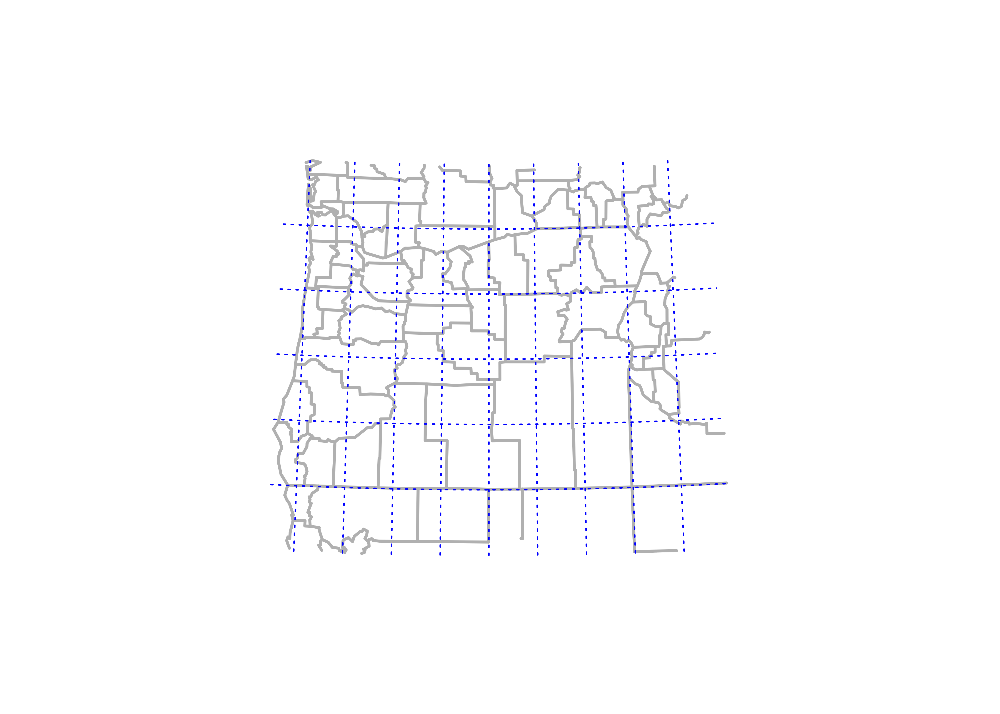
Save the (unprojected) shape file
Create a new spatial lines data frame. First, create some data (sld), consisting of an ID number for each outline segment, then convert those data to a spatial lines data frame (pnw.SLDF) using the SpatialLinesDataFrame() function (and plot it to check).
## Object of class SpatialLines
## Coordinates:
## min max
## x -124.53238 -115.05566
## y 41.00086 46.99973
## Is projected: FALSE
## proj4string : [+proj=longlat +ellps=WGS84]sld <- as.numeric(row.names(pnw.outlines.sp))
sldf <- data.frame(sld)
row.names(sldf) <- row.names(pnw.outlines.sp)
pnw.SLDF <- SpatialLinesDataFrame(pnw.outlines.sp, sldf, match.ID=TRUE)
plot(pnw.SLDF)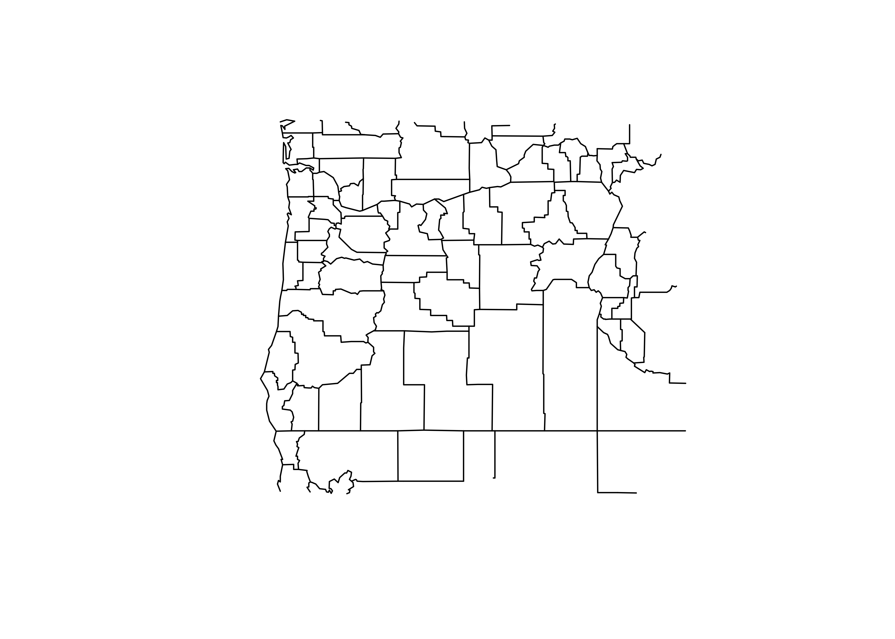
Write out the data frame
outshp <- "pnwshp"
#writeLinesShape(pnw.SLDF, outshp, factor2char = TRUE) # deprecated
writeOGR(pnw.SLDF, outshp, "sldf", driver="ESRI Shapefile", overwrite_layer = TRUE)Read it back in to check
## OGR data source with driver: ESRI Shapefile
## Source: "/Users/bartlein/Dropbox/DataVis/working/GeogDataAnalysis/pnwshp", layer: "sldf"
## with 218 features
## It has 1 fields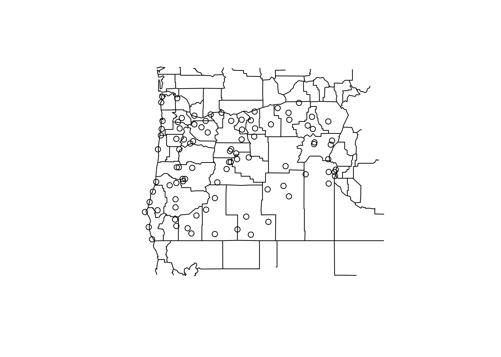
Looks ok.
8 Readings
Chapter 3 in Bivand, R., et al. (2013) Applied Spatial Data Analysis with R, 2nd edition. (Search for the eBook version on the UO Library page [http://library.uoregon.edu]) (The whole book is worth looking at, but Ch. 3 is the key reference for the display of spatial data (i.e. mapping).)